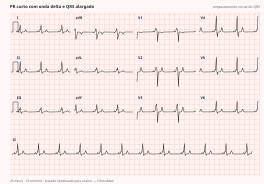
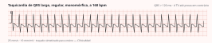
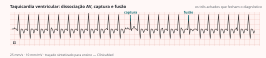
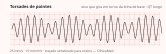

Cardiologia · 73 min · ESC 2019 · monografia
Taquiarritmias: do QRS estreito ao largo
A conduta na taquicardia se decide em duas perguntas, nesta ordem: o paciente está instável, e o QRS é estreito ou largo. Errar a segunda é o erro que mata — verapamil numa taquicardia ventricular e bloqueador do nó numa fibrilação atrial pré-excitada são as duas condutas que a ESC marca como classe III. Esta monografia percorre a diretriz europeia de 2019 de taquicardia supraventricular, cruza o QRS largo com a ESC 2022 e com a AHA 2025 de suporte avançado, e mostra, arritmia por arritmia, o que muda no tratamento agudo e no crônico.
1. As duas perguntas que ordenam a conduta
- A taquicardia está causando instabilidade? Hipotensão, alteração aguda do sensório, choque, dor isquêmica, insuficiência cardíaca aguda. Se sim, cardioversão sincronizada — classe I na ESC 2019 no QRS estreito e no largo.
- O QRS é estreito (≤120 ms) ou largo (>120 ms)? Estreito significa ativação pelo His-Purkinje, e origem acima ou dentro do feixe de His. Largo significa taquicardia ventricular até prova em contrário.
- É regular ou irregular? No estreito, irregular aponta fibrilação atrial, taquicardia atrial multifocal ou flutter com condução variável. No largo, aponta fibrilação atrial pré-excitada ou TV polimórfica — os dois cenários em que errar o fármaco custa caro.
Antes de assumir que o paciente é jovem: a prevalência de taquicardia supraventricular é de 2,25 por mil, mulheres têm o dobro do risco dos homens e quem tem 65 anos ou mais, mais de cinco vezes o risco dos jovens — nem toda taquicardia supraventricular é arritmia do jovem é a primeira mensagem-chave da diretriz. E o exame que decide todo o seguimento é o ECG de 12 derivações durante a taquicardia, classe I C nas duas larguras de QRS e o que mais se perde na correria.
flowchart TD
A["Taquicardia com pulso"] --> B{"Instabilidade causada pela taquicardia?
hipotensão · sensório · choque · dor isquêmica · IC aguda"}
B -->|"sim"| C{"Polimórfica?"}
C -->|"sim"| C1["Choque NÃO sincronizado imediato"]
C -->|"não"| C2["Cardioversão sincronizada — I B"]
B -->|"não"| D{"QRS largo > 120 ms?"}
D -->|"não"| E{"Regular?"}
E -->|"sim"| E1["Manobra vagal I B → adenosina I B
→ verapamil/diltiazem IIa B ou β-bloqueador IIa C
→ cardioversão sincronizada I B"]
E -->|"não"| E2["FA · TA multifocal · flutter com condução variável
Controlar frequência e tratar a causa de base"]
D -->|"sim"| F{"Regular?"}
F -->|"sim"| G["ECG de 12 derivações I C · manobra vagal I C
Adenosina IIa C se NÃO houver pré-excitação no ECG basal
Procainamida IIa B · amiodarona IIb B · verapamil III B"]
F -->|"não"| H["FA pré-excitada até prova em contrário
Cardioversão se instável · ibutilida ou procainamida IIa B se estável"]
2. Ler o QRS estreito: regularidade, onda P e intervalo RP
Com ritmo regular, a leitura tem três passos: há onda P visível? Se não, o mais provável é reentrada nodal típica, com a P sepultada no QRS. A frequência atrial é maior que a ventricular? Pense em flutter e taquicardia atrial. Se a relação é 1:1, meça o intervalo RP.

| Padrão do RP | Diagnósticos | Comentário |
|---|---|---|
| RP curto ≤90 ms | Reentrada nodal típica (lenta-rápida) | O corte de 90 ms na superfície é admitidamente arbitrário e só vale com P visível; no laboratório, o corte ventrículo-atrial é 70 ms |
| RP curto >90 ms (RP < PR) | Reentrada atrioventricular ortodrômica; taquicardia atrial; reentrada nodal atípica | Na ortodrômica o RP é constante e vai até metade do ciclo |
| RP longo (RP ≥ PR) | Taquicardia atrial; reentrada nodal atípica; taquicardia juncional ectópica | Ondas U na reentrada nodal típica podem simular RP longo |
Separam nodal de atrioventricular o pseudo-r' em V1 e a pseudo-S nas inferiores — específicos (91% a 100%), pouco sensíveis (58% e 14%). Dois raciocínios que resolvem casos: bloqueio ou dissociação atrioventricular num QRS estreito exclui reentrada atrioventricular, porque átrios e ventrículos são partes obrigatórias daquele circuito; e frequência perto de 150 bpm obriga a procurar flutter 2:1, já que a frequência atrial do flutter é de 250 a 330 por minuto.
Como o r' de V1 fecha o raciocínio
O pseudo-r' em V1 que só aparece na taquicardia é a P retrógrada quase simultânea ao QRS — assinatura da reentrada nodal típica. Conduta aguda: manobra vagal, depois adenosina. Crônica: ablação da via lenta, 97% de sucesso e risco de bloqueio abaixo de 1%.3. Manobras vagais: a Valsalva modificada do REVERT
É a primeira medida no paciente estável com taquicardia regular de QRS estreito, classe I B. A Valsalva convencional bem executada reverte entre 19% e 54% dos casos; a versão modificada do ensaio REVERT elevou a conversão de 17% para 43%, sem custo nem risco adicional.
- Paciente semirreclinado, sopro contra resistência por 15 segundos — padronizado pelo êmbolo de uma seringa de 10 mL.
- Ao fim do esforço, decúbito dorsal com elevação passiva das pernas por cerca de 15 segundos — é essa etapa que faz a diferença, ao aumentar o retorno venoso na fase de reflexo vagal.
- Massagem carotídea: sempre unilateral, no máximo 5 segundos, monitorizada. Evitar em quem teve ataque isquêmico transitório ou acidente vascular cerebral e em quem tem sopro carotídeo.
| Taquicardia regular de QRS estreito sem diagnóstico estabelecido — ESC 2019 | Classe |
|---|---|
| Cardioversão sincronizada no paciente instável | IB |
| ECG de 12 derivações durante a taquicardia | IC |
| Manobras vagais, preferencialmente em decúbito com elevação das pernas | IB |
| Adenosina 6–18 mg em bólus IV, se as manobras vagais falharem | IB |
| Verapamil ou diltiazem IV, se vagal e adenosina falharem | IIaB |
| β-bloqueador IV (esmolol ou metoprolol), se vagal e adenosina falharem | IIaC |
| Cardioversão sincronizada quando o fármaco falha em reverter ou controlar | IB |
4. Adenosina: dose, técnica e o que a pausa revela
Nucleosídeo purínico endógeno que age nos receptores A1 cardíacos e prolonga a condução à custa do intervalo átrio-His, sem efeito sobre o His-ventrículo, até produzir o bloqueio transitório que interrompe a taquicardia.
- 6 a 18 mg IV: 6 mg, depois 12 mg, considerar 18 mg conforme tolerância. A dose média para reverter é 6 mg e o sucesso passa de 90% nas arritmias dependentes do nó.
- Bólus rápido com flush imediato de salina, em veia proximal e calibrosa (antecubital), com o membro elevado.
- Meia-vida plasmática de segundos, efeito completo em 20 a 30 segundos: repetir em 1 minuto é seguro, e a injeção lenta não entrega concentração útil ao coração.
- Avisar: rubor, dispneia transitória e dor torácica — intensos e passageiros.
| Resposta | Diagnóstico sugerido |
|---|---|
| Nenhum efeito | Dose ou técnica inadequadas; taquicardia ventricular septal alta |
| Lentificação gradual seguida de reaceleração | Taquicardia sinusal; atrial focal automática; juncional ectópica |
| Término súbito | Reentrada nodal; reentrada atrioventricular; reentrada sinoatrial; atrial por atividade deflagrada |
| Atrial persiste com bloqueio transitório de alto grau | Flutter; atrial microrreentrante — a adenosina foi diagnóstica, não terapêutica |
A adenosina não interrompe macrorreentradas atriais, e as TV fasciculares respondem a verapamil, não a adenosina.
Falhando a adenosina: verapamil 0,075–0,15 mg/kg (5–10 mg) ou diltiazem 0,25 mg/kg (20 mg) em 2 min, que terminam a arritmia em 64% a 98% dos casos ao custo de hipotensão; ou β-bloqueador — esmolol 0,5 mg/kg em bólus ou 0,05–0,3 mg/kg/min, metoprolol 2,5 a 15 mg —, mais eficaz em reduzir a frequência do que em reverter o ritmo.
5. Reentrada nodal
É a arritmia regular mais comum do ser humano; o substrato da via lenta são as extensões nodais inferiores. Na forma típica (lenta-rápida, ~94%), a ativação atrial retrógrada ocorre antes, junto ou logo depois do QRS — daí a P invisível; a atípica responde por 6%. Bloqueio atrioventricular durante a crise é excepcional, porque nem átrios nem ventrículos são necessários ao circuito, e o infradesnivelamento de ST que acompanha a crise não significa isquemia.
| Reentrada nodal — ESC 2019 | Classe |
|---|---|
| Instável: cardioversão sincronizada | IB |
| Estável: manobras vagais → adenosina 6–18 mg IV | IB |
| Estável: verapamil ou diltiazem IV se vagal e adenosina falharem | IIaB |
| Estável: β-bloqueador IV se vagal e adenosina falharem | IIaC |
| Crônico: ablação por cateter na reentrada nodal sintomática e recorrente | IB |
| Crônico: diltiazem/verapamil ou β-bloqueador, se a ablação não for desejada ou factível | IIaB |
| Crônico: abstenção de terapia em paciente minimamente sintomático, com episódios raros e curtos | IIaC |
A recomendação de não tratar merece atenção: metade dos pacientes com crises curtas e raras fica assintomática em um a três anos, e o antiarrítmico crônico abole episódios com sucesso entre 13% e 82% — diante de uma ablação com 97% de sucesso, ele perdeu quase todo o espaço no jovem sintomático. Para crises esporádicas, dose única oral de diltiazem 120 mg com propranolol 80 mg converte até 94%.
6. Reentrada atrioventricular: ortodrômica e antidrômica
Vias acessórias conectam diretamente átrio e ventrículo pelo anel atrioventricular; 60% ficam ao longo da valva mitral e 25% na região septal. A síndrome de Wolff-Parkinson-White combina via manifesta — PR curto ≤120 ms, onda delta e QRS alargado em ritmo sinusal — com taquiarritmias recorrentes.

| Reentrada atrioventricular por via manifesta ou oculta — ESC 2019 | Classe |
|---|---|
| Instável: cardioversão sincronizada. Estável: manobras vagais | IB |
| Na ortodrômica: adenosina 6–18 mg IV se as manobras vagais falharem | IB |
| Na ortodrômica: verapamil ou diltiazem IV se vagal e adenosina falharem | IIaB |
| Na ortodrômica: β-bloqueador IV, sem insuficiência cardíaca descompensada | IIaC |
| Na antidrômica: ibutilida, procainamida, flecainida ou propafenona IV, ou cardioversão sincronizada | IIaB |
| Na antidrômica: amiodarona IV em casos refratários | IIbB |
| Crônico: ablação da via acessória na reentrada sintomática e recorrente | IB |
| Crônico: β-bloqueador ou verapamil/diltiazem se não houver pré-excitação no ECG basal; propafenona ou flecainida sem cardiopatia isquêmica ou estrutural são IIb B | IIaB |
| Digoxina, β-bloqueadores, diltiazem, verapamil e amiodarona na fibrilação atrial pré-excitada | IIIB |
7. Taquicardia atrial focal e multifocal
A focal é um ritmo atrial organizado acima de 100 bpm que nasce de um foco discreto e se espalha em padrão centrífugo; as P diferem das sinusais e vêm com PR igual ou maior que o basal.
| Taquicardia atrial focal — ESC 2019 | Classe |
|---|---|
| Instável: cardioversão sincronizada; e quando o fármaco falha em reverter ou controlar | IB |
| Estável: adenosina 6–18 mg IV | IIaB |
| Estável: β-bloqueador IV, ou verapamil/diltiazem IV, se a adenosina falhar | IIaC |
| Estável: ibutilida, ou flecainida/propafenona, ou amiodarona IV, se o acima falhar | IIbC |
| Crônico: ablação na focal recorrente, sobretudo se incessante ou causadora de taquicardiomiopatia | IB |
| Crônico: β-bloqueador, verapamil/diltiazem, ou propafenona/flecainida sem cardiopatia estrutural | IIaC |
| Crônico: ivabradina com β-bloqueador, ou amiodarona, se as medidas acima falharem | IIbC |
A multifocal é um ritmo rápido e irregular com pelo menos três morfologias de onda P, separada da fibrilação atrial pela linha isoelétrica entre as P — daí pedir ECG de 12 derivações, porque numa derivação só as duas se confundem. Associa-se a doença pulmonar, hipertensão pulmonar, doença coronariana e valvar, hipomagnesemia e teofilina.
8. Flutter atrial e os circuitos
O flutter típico é uma macrorreentrada em torno do anel tricúspide que usa o istmo cavotricuspídeo como passagem crítica. Na forma comum a ativação desce pela parede livre do átrio direito, cruza o istmo e sobe pelo septo — giro anti-horário visto do ápice —, com frequência atrial de 250 a 330 por minuto e ondas em dente de serra negativas nas inferiores, positivas em V1; no giro horário o padrão se inverte. Um ECG atípico não exclui circuito dependente do istmo quando a ativação atrial foi modificada por cirurgia, ablação prévia ou antiarrítmico.

| Flutter e taquicardias atriais macrorreentrantes — ESC 2019 | Classe |
|---|---|
| Anticoagulação como na fibrilação atrial, quando há fibrilação atrial concomitante | IB |
| Considerar anticoagulação no flutter sem fibrilação atrial — o limiar de início não está estabelecido | IIaC |
| Instável: cardioversão sincronizada. Estável: ibutilida IV, ou dofetilida IV ou oral intra-hospitalar; ou cardioversão elétrica de baixa energia (≤100 J bifásico); ou estimulação atrial de alta frequência em portador de dispositivo | IB |
| β-bloqueador ou verapamil/diltiazem IV para controle da resposta ventricular | IIaB |
| Amiodarona IV se o acima não estiver disponível ou desejável | IIbC |
| Propafenona e flecainida não são recomendadas para reversão | IIIB |
| Crônico: ablação nos episódios sintomáticos e recorrentes de flutter dependente do istmo | IA |
| Crônico: ablação em centro experiente no flutter não dependente do istmo; e no flutter persistente ou com disfunção sistólica por taquicardiomiopatia | IB |
| Crônico: ablação já após o primeiro episódio sintomático de flutter típico; ou β-bloqueador e verapamil/diltiazem se a ablação não for desejada | IIaB |
A cardioversão elétrica do flutter é mais eficaz e exige menos energia que a da fibrilação atrial; o controle farmacológico da frequência, ao contrário, é difícil. Dofetilida e ibutilida revertem; classes IA e IC praticamente não; a amiodarona reverte mal, mas ajuda na frequência.
9. QRS largo: taquicardia ventricular até prova em contrário
As proporções relatadas são 80% de taquicardia ventricular, 15% de supraventricular com aberrância e 5% de condução por via acessória — e acima de 90% de TV em quem tem cardiopatia estrutural ou infarto prévio. A ESC é inequívoca: o diagnóstico padrão deve ser taquicardia ventricular até prova em contrário. O diferencial inclui bloqueio de ramo preexistente ou funcional, condução por via acessória, alargamento induzido por fármaco ou distúrbio eletrolítico — sobretudo classes IA e IC — e loop sem fim por marcapasso.

| Achado | O que significa |
|---|---|
| Dissociação atrioventricular e batimentos de captura e de fusão | Achados-chave de TV; a P se esconde no QRS largo e na T, então procure nas inferiores e na derivação de Lewis |
| Concordância negativa de V1 a V6 | Quase diagnóstica de TV, especificidade >90%, mas presente em só 20% delas. A concordância positiva indica TV ou antidrômica por via posterior/lateral esquerda |
| QRS >140 ms com ramo direito ou >160 ms com ramo esquerdo; ausência de RS nas precordiais ou RS >100 ms; pico da R em DII ≥50 ms | Critérios de TV. A duração do QRS não vale na taquicardia pré-excitada nem sob classe IA/IC |
| Eixo entre −90° e ±180° | Fortemente indicativo de TV. Na aberrância o eixo fica entre −60° e +120° |
| Com padrão de ramo direito: em V1, R monofásica, qR ou "orelha de coelho" com pico esquerdo mais alto; em V6, R:S <1. Com padrão de ramo esquerdo: em V1, R larga com nadir da S atrasado; em V6, qualquer Q ou QS | TV. O contrário — rSR' com orelha direita mais alta e R:S >1 em V6 — é aberrância |
| Morfologia idêntica ao ECG sinusal com bloqueio de ramo | Provavelmente não é TV. Exceções: reentrada ramo a ramo e TV septal alta |

Os algoritmos organizados — Brugada (ausência de RS nas precordiais, RS >100 ms, dissociação, morfologia em V1 e V6) e Vereckei (análise de aVR: R inicial, R ou Q inicial >40 ms, entalhe no ramo descendente de complexo negativo, razão entre velocidade de ativação inicial e terminal) — não são detalhados na ESC 2019, e a diretriz é implacável quanto ao desempenho deles: especificidade de 40% a 80% e acurácia em torno de 75% em estudos independentes. Como só 25% a 30% das taquicardias de QRS largo são supraventriculares, chamar tudo de TV sem esforço nenhum alcança acurácia semelhante — o melhor argumento a favor da regra de segurança.
flowchart TD
A["Taquicardia de QRS largo > 120 ms"] --> B{"Instabilidade hemodinâmica?"}
B -->|"sim"| C["Cardioversão sincronizada — I B"]
B -->|"não"| D["ECG de 12 derivações durante a taquicardia — I C
Manobras vagais em decúbito com elevação das pernas — I C"]
D --> E{"Há pré-excitação no ECG basal?"}
E -->|"sim"| F["NÃO usar adenosina
Tratar como pré-excitada"]
E -->|"não"| G["Adenosina IV — IIa C"]
G --> H{"Reverteu ou esclareceu?"}
H -->|"não"| I["Procainamida IV — IIa B
Amiodarona IV — IIb B
Verapamil: III B"]
F --> I
I --> J{"Reverteu ou controlou?"}
J -->|"não"| C
J -->|"sim"| K["Documentar · investigar substrato · estratificar risco"]
10. TV monomórfica, polimórfica e torsades
Taquicardia ventricular são três ou mais batimentos consecutivos acima de 100 bpm originados nos ventrículos: não sustentada até 30 segundos, sustentada acima disso ou quando exige intervenção; monomórfica mantém a morfologia, polimórfica muda continuamente, e torsades de pointes é a polimórfica no contexto de QT prolongado.
No paciente estável com TV monomórfica sustentada, a ESC 2022 recomenda cardioversão elétrica como primeira linha mesmo quando a arritmia é tolerada, desde que o risco anestésico seja baixo (I C). Entre os fármacos, a procainamida IV é IIa B quando há cardiopatia estrutural conhecida ou suspeita, com base no PROCAMIO, em que produziu menos eventos adversos cardíacos maiores e mais términos em 40 minutos que a amiodarona; a amiodarona IV é IIb B; sem cardiopatia significativa, flecainida, ajmalina ou sotalol são IIb C; o verapamil IV é classe III B. Duas TV idiopáticas têm tratamento próprio e classe I: a da via de saída do ventrículo direito (ramo esquerdo, eixo inferior) responde a β-bloqueador; a fascicular (ramo direito com desvio de eixo), a verapamil.
A polimórfica se trata diferente por razão mecânica: cada QRS tem morfologia distinta e o aparelho não sincroniza, então o choque é não sincronizado e em alta energia. A AHA 2025 a classifica como sempre instável, com desfibrilação imediata (classe 1).

- Sulfato de magnésio IV com reposição de potássio — classe I C na ESC 2022, e funciona mesmo com magnesemia normal.
- Retirar o agente causador: classe I B quando se suspeita de arritmia induzida por fármaco.
- Se recorre apesar da correção dos precipitantes e do magnésio, acelerar a frequência com isoproterenol ou estimulação transvenosa — classe I C no QT longo adquirido.
- Na AHA 2025, magnésio para recorrências com QT longo é 2b; sem QT longo, lidocaína, amiodarona e tratamento da isquemia, também 2b.
Na tempestade elétrica — três ou mais episódios sustentados em 24 h, cada um exigindo intervenção —, a sedação leve a moderada é classe I C por reduzir o tônus adrenérgico, o β-bloqueador não seletivo com amiodarona IV é I B na cardiopatia estrutural, e a ablação é I B na taquicardia incessante ou refratária.
O que responder
A estabilidade não sustenta o diagnóstico: a probabilidade pré-teste de TV neste paciente passa de 90% só pela história de infarto. Verapamil é classe III B no QRS largo de etiologia desconhecida e pode causar deterioração grave numa TV até então estável. Conduta: registrar o ECG de 12 derivações, procurar dissociação, capturas e fusão, e tratar como TV — cardioversão sincronizada sob sedação (I C) ou procainamida IV (IIa B).11. Fibrilação atrial pré-excitada: o que é proibido
Fibrilação atrial paroxística ocorre em cerca de 50% dos portadores de Wolff-Parkinson-White e pode ser a arritmia de apresentação. Quando desce por uma via com período refratário anterógrado curto, a resposta ventricular pode ser altíssima e degenerar em fibrilação ventricular.

| Fibrilação atrial pré-excitada, tratamento agudo — ESC 2019 | Classe |
|---|---|
| Cardioversão sincronizada no paciente instável, e quando o fármaco falha em reverter ou controlar | IB |
| Estável: ibutilida ou procainamida IV | IIaB |
| Estável: flecainida ou propafenona IV | IIbB |
| Amiodarona IV não é recomendada | IIIB |
Na beira do leito: taquicardia rápida, larga e irregular é fibrilação atrial pré-excitada até prova em contrário; nenhum bloqueador do nó; cardioversão se instável. O definitivo é a ablação da via acessória.
12. Ablação, pré-excitação assintomática e taquicardiomiopatia
A diretriz afirma que em todas as arritmias reentrantes e na maioria das focais a ablação deve ser oferecida como escolha inicial. O que sustenta a frase é o desempenho na era atual.
| Arritmia | Sucesso agudo | Recorrência | Complicações | Mortalidade |
|---|---|---|---|---|
| Taquicardia atrial focal | 85% | 20% | 1,4% | 0,1% |
| Flutter dependente do istmo cavotricuspídeo | 95% | 10% | 2% | 0,2% |
| Reentrada nodal | 97% | 2% | 0,3% | 0,01% |
| Reentrada atrioventricular | 92% | 8% | 1,5% | 0,1% |
Na reentrada nodal, mirar a extensão nodal inferior e evitar o médio-septo reduziu o risco de bloqueio a quase nada; a crioablação tem menos bloqueio e mais recorrência. No flutter, a ablação do istmo com bloqueio bidirecional confirmado leva a recorrência abaixo de 10%. Macrorreentradas após cirurgia atrial vão para centro especializado, e taquicardias atriais surgidas depois de ablação de fibrilação atrial esperam ao menos 3 meses.
A taquicardiomiopatia é causa reversível de disfunção ventricular produzida por taquicardia persistente ou extrassistolia muito frequente. Considerá-la em paciente com fração de ejeção reduzida e frequência acima de 100 bpm é classe I B; a ablação da arritmia responsável é I B; e a ablação do nó com marcapasso biventricular ou hisiano é I C quando a taquicardia não pode ser ablada nem controlada. A função costuma melhorar após 3 meses de frequência normalizada.
O que está faltando
Fração reduzida com frequência acima de 100 bpm obriga a considerar taquicardiomiopatia (I B), e o traçado descreve taquicardia atrial focal incessante. A conduta é ablação (I B), mantendo β-bloqueador e inibidor da enzima conversora antes e depois. A função costuma melhorar em cerca de 3 meses — e o seguimento continua, porque a arritmia pode voltar.13. Armadilhas consolidadas
- Classificar a arritmia antes de olhar a estabilidade. A cardioversão sincronizada é classe I em qualquer taquicardia com pulso instável.
- Usar a estabilidade como argumento diagnóstico. TV pode ser tolerada por horas.
- Tratar QRS largo como supraventricular com aberrância. Verapamil no QRS largo de mecanismo desconhecido é classe III B na ESC 2019 e 3: dano na AHA 2025.
- Qualquer bloqueador do nó na fibrilação atrial pré-excitada — digoxina, β-bloqueador, diltiazem, verapamil e amiodarona, todos classe III B; adenosina entra na mesma proibição no QRS largo irregular.
- Adenosina no QRS largo com pré-excitação no ECG basal: pode induzir fibrilação atrial e, na antidrômica, precipitar parada.
- Sincronizar o choque na TV polimórfica — cada QRS é diferente e o aparelho não sincroniza.
- Esquecer o magnésio na torsades, ou dar magnésio empírico em polimórfica sem QT longo, onde o que resolve é tratar a isquemia.
- Classe IC no flutter sem bloqueador do nó: a frequência atrial cai, a condução vira 1:1 e sai uma taquicardia de QRS largo muito rápida.
- Suspender a anticoagulação após ablação de flutter — a incidência de fibrilação atrial depois chega a 70%.
- Considerar a pré-excitação intermitente sinal de segurança — mais de um quinto tem período refratário da via ≤250 ms.
- Não pensar em taquicardiomiopatia diante de fração reduzida com frequência acima de 100 bpm.
- Manter antiarrítmico crônico em jovem com reentrada nodal sintomática quando a ablação tem 97% de sucesso — e, no extremo oposto, medicar quem tem episódios raros e curtos, para quem a abstenção é classe IIa.
14. Autoteste
1. Quais são as duas perguntas que ordenam a conduta?
A taquicardia causa instabilidade? Se sim, cardioversão sincronizada, classe I, qualquer que seja o mecanismo. Depois: o QRS é estreito ou largo?
2. Descreva a Valsalva modificada e quanto ela acrescenta.
Sopro contra resistência por 15 segundos, semirreclinado, contra o êmbolo de uma seringa de 10 mL; em seguida decúbito dorsal com elevação passiva das pernas. A conversão passou de 17% para 43% no REVERT. Classe I B.
3. Adenosina: dose, técnica e a razão farmacológica de cada detalhe.
6 mg, depois 12 mg, considerar 18 mg. Bólus rápido em veia proximal e calibrosa, com flush imediato: a meia-vida é de segundos e o efeito termina em 20 a 30 segundos — por isso a injeção lenta não funciona e repetir em 1 minuto é seguro.
4. A adenosina expõe ondas em serrilhado a 300 por minuto e a taquicardia não reverte.
Flutter atrial — a adenosina foi diagnóstica, não terapêutica. No estável: ibutilida ou dofetilida, ou cardioversão de baixa energia ≤100 J bifásico (I B). Ablação do istmo é I A no recorrente sintomático.
5. Como o intervalo RP orienta o QRS estreito regular?
RP ≤90 ms: reentrada nodal típica. RP curto >90 ms: ortodrômica, atrial, nodal atípica. RP longo (≥ PR): atrial, nodal atípica, juncional ectópica.
6. Ortodrômica × antidrômica.
Ortodrômica: mais de 90% das reentradas atrioventriculares; desce pelo nó, sobe pela via; QRS estreito. Antidrômica: 3% a 8% dos portadores de Wolff-Parkinson-White; desce pela via; QRS largo totalmente pré-excitado, indistinguível de TV.
7. Que achados praticamente fecham o diagnóstico de taquicardia ventricular?
Dissociação atrioventricular e batimentos de captura ou fusão. Concordância negativa de V1 a V6 tem especificidade acima de 90%, mas aparece em só 20% das TV. Também favorecem eixo entre −90° e ±180°, QRS >140 ms com ramo direito ou >160 ms com ramo esquerdo e pico da R em DII ≥50 ms.
8. Por que a diretriz relativiza Brugada e Vereckei?
Especificidade de 40% a 80% e acurácia em torno de 75% em estudos independentes — e, como só 25% a 30% das taquicardias de QRS largo são supraventriculares, chamar todas de TV alcança acurácia semelhante.
9. Taquicardia irregular, larga, muito rápida e de morfologia variável em jovem. O que é proibido?
É fibrilação atrial pré-excitada. Classe III B: digoxina, β-bloqueadores, diltiazem, verapamil e amiodarona; adenosina também proibida no QRS largo irregular. Cardioversão se instável; ibutilida ou procainamida IV se estável (IIa B).
10. Que marcadores caracterizam uma via acessória de alto risco?
SPERRI ≤250 ms, período refratário efetivo anterógrado da via ≤250 ms, múltiplas vias e taquicardia mediada pela via induzível. Nesses casos a ablação é classe I C.